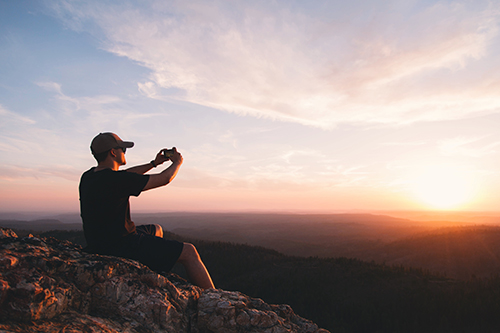

Hey, Nice to have you here 
I'm Matias, a qualified personal trainner from Uruguay living in London.
My passion for outdoors and sports has been with me all my life. As a kid I used to play football on the local team. The life back home was very much surrounded by nature. My home town Colonia is located by the sea and the locals have a special connection with their environment.
I’d enjoy going for a long bicycle ride on summer days with my friends or running alongside the promenade. A lot of my days were spent outdoor exploring nearby towns and exercising. I really believe exercise can be fun and rewarding.
Fast forward today, I got this amazing opportunity of completing my personal training program here in London, finally I have had the chance of perusing my life dream of becoming a professional personal trainer. And I’m so excited that I’m able to help others achieve their goals.
“One can choose to go back toward safety or forward toward growth. Growth must be chosen again and again; fear must be overcome again and again.” ―Abraham Maslow